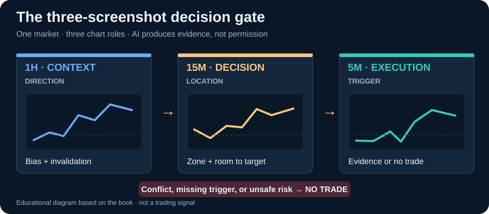

The New Discipline of AI-Assisted Futures
Which facts does the market data support, and which claims about participants remain unproven?
Original Chapter 1The Smart Three-Screenshot Method for Multi-Timeframe Futures Trading
Free Google Books Preview
Read a free sample of this book on Google Books before you buy.
Starting with The New Discipline of AI-Assisted Futures, the source develops a 15-chapter learning sequence that later addresses Prompting as a Trading Instrument and concludes with The Final Playbook. These original topics show what the reader can explore beyond a brief store description. More importantly, they reveal why the analytical questions should be answered in a defined order.
Expand each stage. The headings below are taken from the book's numbered contents; the stage divisions are used only to make web reading easier.
Study the source sequence, identify the surrounding market context and consider what would invalidate a proposed interpretation.
Study the source sequence, identify the surrounding market context and consider what would invalidate a proposed interpretation.
Study the source sequence, identify the surrounding market context and consider what would invalidate a proposed interpretation.
Study the source sequence, identify the surrounding market context and consider what would invalidate a proposed interpretation.
Which facts does the market data support, and which claims about participants remain unproven?
Original Chapter 1How could a different timeframe, source dataset or state of the market undermine the apparent setup?
Original Chapter 8How would you document this idea, its failure point and its consequences before the next bars appear?
Original Chapter 15The source contents visible for this edition list 15 consecutive numbered chapters, from “The New Discipline of AI-Assisted Futures” through “The Final Playbook.”
Yes. The source places it at Chapter 2.
This is a chapter topic at Chapter 8.
The final numbered chapter topics include “The Psychology of No Trade”, “Journaling and Continuous Improvement”, “The Final Playbook”.
No. Instrument and execution risk remain. Traders must account for spreads, slippage, leverage and the possibility that a technically valid idea loses money.
Study the decision process, not just its name. Read the explanations and practice material in the full edition by Faramarz Kowsari.
Get AI-Assisted Crypto Futures · Preview the available opening pages
Educational trading content; no chart pattern, model or backtest guarantees a profitable outcome.
The book assigns different jobs to each image. Its first chapter supplies distinct prompts for the 1H bias, 15M zone quality, 5M trigger and conflict detection. A useful answer is conditional, inspectable and allowed to finish with No Trade.

Include the timeframe label and recent swing structure. Ask the assistant to report Long Bias, Short Bias, or No Direction, plus the level that would invalidate that reading. The source explicitly says: no entry suggestion at this stage.
Show the candidate zone, nearby support and resistance, and enough candles to judge reaction. In the book's scoring exercise, rate structure, liquidity, invalidation distance and room to target out of ten, rejecting zones below seven.
Only after the first two layers agree, inspect whether there is a defined break, rejection, continuation or no valid trigger. The screenshot must show several prior candles, not just the one bar that seems to justify a desired entry.
Compare the three images for conflicts in trend, zone, momentum and risk. Chapter 1's example prompt says that two major conflicts should return No Trade. The app's order panel must still match a written risk and exit plan.
Worked decision (hypothetical): The 1H chart remains bullish above its protected low. The 15M price is already pressing against nearby resistance, giving little distance to a sensible target. The 5M prints a bullish candle, but the reward geometry fails the 15M zone test. A disciplined answer is No Trade, not a recommendation to chase the small bullish candle. The conclusion follows the book's checklist, not a prediction.
No. Images omit information and can be cropped misleadingly. The book asks for visible labels, swing points, sufficient context and independent confirmation before any order.
No. The source treats AI output as an input; isolated margin, stop-loss, risk and the actual exchange order settings remain the trader's responsibility.
The chapter's conflict prompt asks the assistant to describe the contradiction explicitly and choose No Trade when major conflicts accumulate.
Explore the official book preview before purchase. Charts and examples are for education and do not promise future trading results.
Explore the library by subject and find related books faster.
This title is part of the Faramarz Kowsari Trading Books Library, a dedicated collection of practical books on futures, options, order flow, Smart Money Concepts, technical analysis, scalping, swing trading, market-specific trading, risk and systematic research.